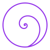

About this library
The work so far
An open, unfinished study — offered in the hope that human hands make it better.
Recursive Repatterning is the work so far of one solo developer — PlayfulProcess — who is passionate about emotion and about the wider family of meaning-making systems, and who built this library with a great deal of help from AI. It is published in the open, deliberately unfinished, because the hope is simple: that real human collaborators — clinicians, researchers, readers, translators — will come and make the whole thing better.
I am a student of these schools and traditions, not a clinician or a therapist. The notes on each school are a careful first pass, kept close to the published record, but they will contain mistakes — and those mistakes are mine alone.
Where I cite published research or a school's own literature, I cite it only as a source I learned from — never as a reviewer who vouches for this library. Those authors are not responsible for my errors. If you know better than I do, corrections are genuinely welcome — here's how to contribute.
One branch of a larger tree
This site is a branch of recursive.eco — an open platform built on grammars: symbolic systems you make meaning with, made by people, not algorithms. A school of emotion is one such grammar. This library is what a single grammar looks like when it grows all the way out: its research, its citations, its per-item notes.

A logo, still forming

Manifesto
Recursive Repatterning
A living grammar, held in the open.
We begin with an observation. There are no fixed biological fingerprints for emotions — no single circuit in the body that lights up and means, unambiguously, fear or shame or joy. And we still have to make meaning of what we feel. So the history of naming emotion is not a history of one true taxonomy handed down intact. It is a history of people renewing, over and over, their relationship with the same small set of feelings.
That renewal is not a failure to discover the real taxonomy. It is the practice.
We hold each school of emotion to be a living grammar — a finite vocabulary that can speak an unending number of sentences. Like any living language, it survives only because people keep speaking it in new ways. Every school is a dialect. Every practice it teaches, a sentence someone dares to propose. Every act of naming a feeling, a small act of interpretation. Each generation receives the vocabulary, bends it, and hands it on.
Tolkien argued that the invented worlds — the fairy-stories, the myths — are not an escape from reality but one of the ways we return to it. We are, he said, sub-creators: born into a world we did not make, and invited, even so, to take part in its making. We paint and tell stories and invent games and plant gardens and build languages and dream up worlds — not because the world is lacking, but because imagining is one of the ways we belong to it. Naming a feeling is a small act of the same kind: not a discovery report, a made thing that helps.
He gave one of imagination's gifts a name: Recovery — the grace of seeing the ordinary again as if for the first time. A feeling becomes "just stressed," or "just fine," and we stop noticing what's actually there. Recovery is the quiet miracle of attention restored — and it is not sentimentality.
We have an old phrase for this kind of seeing — rose-colored glasses — and we usually mean it as an insult, a soft lie laid over the truth. It may be closer to the opposite. Studying dating couples across a year, the psychologists Sandra Murray, John Holmes, and Dale Griffin found that the partners who idealized each other — who kept noticing what was alive and good in the other — were not the deluded ones but the ones whose love lasted, and whose generous view tended, over time, to come true: love, they found, is not blind but prescient. That is not a refusal to see reality. It is a discipline for seeing more of it. And in a way, that is what a school of emotion can be: a vocabulary we put on to look again — not to gild the feeling, but to recover the shade, the texture, and the possible response that habit had worn smooth.
This is what a school can be, at its best: a small practice of recovery. Not because it holds a hidden truth about what you're feeling, and not because some prior science knew a fingerprint we have since lost — but because a new word for a feeling interrupts our habits of seeing. It asks us to pause. To notice. To imagine that things might be otherwise. So a feeling-name is a mirror, never a diagnosis. Relate to it; do not obey it. A name stops being a verdict on who you are and becomes a gate onto what's already alive in you, and onto the responses you might choose. Not a diagnosis. A gate. Meaning here is not merely discovered; it is cultivated, through participation.
This is an old shape, and an honest one. The scholar of nondual Shaiva Tantra Christopher Wallis describes his own path as a kind of circle: you take up the view first and practice it, and only then does the recognition it promised begin to arrive — the doing and the seeing co-create one another. So it is here. You do not wait until you believe a school to use its vocabulary; the way of seeing it offers is something you build by doing it.
Perhaps that is why people keep returning to naming what they feel. Not because any school ever decoded the secret of emotion — but because the mystery is never quite decoded, and a vocabulary is a way to dance with it. Every generation inherits these words, sees something new in them, and leaves them a little changed for the next.
And it has rarely been a solitary thing. One old line of thought — running through Durkheim and the myth-and-ritual scholars — held that the deepest purpose of any shared symbolic practice was social: that its apex was the moment it gathered people into a shared rite, and naming a feeling together — in a room, in therapy, in a hard conversation — is that gathering in miniature.
Our task, then, is not to recover the one true taxonomy of emotion; there is no such thing. It is to understand how each of these grammars actually grew, why it keeps inviting hands, and how to add to it honestly.
Honesty, for us, has a shape. We keep an honest evidence tier on every claim — Johnson's EFT and Gottman's method do not share an evidence base, and the library says so rather than issuing both an undifferentiated "evidence-based" badge — and we let each school speak in its own voice: we name the tradition and the source, we do not dress a school's own vocabulary in claims it never made, and we keep the constructionist reading apart, clearly marked, from what a school says about itself. Mostly, responsibility is a refusal to flatten — letting an NVC section read like NVC and a DBT section read like DBT, without pretending either is the secret key to the other.
This is why the work is open. Every school here is public-domain or CC-BY-SA data and public-domain code — readable, correctable, translatable, free to fork. The living grammar is the idea; the open commons is the practice that makes the idea true. A tradition you cannot touch is not alive; it is embalmed.
And so it is an invitation.
Study the schools. Learn how they differ. Watch meanings rise, drift, vanish, and return. Then make something of your own. Some will build private vocabularies for their families; others for classrooms, communities, research, therapy, or some purpose no one has yet tried. Some will collaborate. Some will publish. Some will keep alive a tradition that might otherwise be lost. Each one continues the same human practice — inheriting a vocabulary, transforming it through experience, and offering it back.
The software exists only to serve that. Here you can build symbolic grammars, cite their evidence, argue their meanings, work alongside others, and — if you wish — publish your work as an open project the next people can carry on. The aim was never to diagnose anyone. It is to tend a living set of vocabularies.
Recursive Repatterning is one grammar within the wider ecosystem of recursive.eco. We believe symbolic systems deserve the care we already give to open software, to shared science, to living ecosystems: they flourish when they are documented, questioned, maintained, shared, and renewed by communities — not when they are guarded by authorities. The future of naming emotion belongs to no single school, publisher, or philosophy. It belongs to everyone willing to meet it honestly, playfully, and generously.
The invitation is not to uncover a final taxonomy sealed inside the body. It is to join the long human practice of tending a symbolic vocabulary for feeling — one word, one conversation, one act of imagination at a time.
Three doors lead on from here: read the evidence behind each school in the sources; draw from the schools and hold what comes up as a mirror, not a diagnosis, in Play; and add your own to the commons in Ways to Contribute.
The library is not complete. The grammar is not finished. The conversation continues.Welcome.